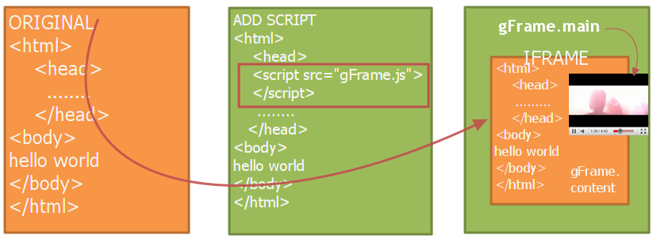

gFrame is
gFrame makes a new frame and insert current document in the frame by javascript. Although many skins(or templates) could be modified, one can't easily make outter frame. If you play the music in the blog without stopping, gFrame helps you. Also gFrame is available in the mordern browsers and old one(from IE5.5 to IE10). Moreover gFrame gives you another useful thing. You can handle element(gLayer) without painful scripts.
create player
remove player
show player
hide player
USAGE

<script src='http://floras.github.com/gFrame/gFrame.js' type='text/javascript'/>
gFrame instantly makes a frame and inserts original documents in the frame without any modification.
You can start or not with gFrame freely. Just use gFrame.exit() or gFrame.start()
Now you can get the background window frame (gFrame.main ) and his document object(gFrame.main.document )
SIMPLE EXAMPLE (Creating gLayer)
gFrame("exam1",
'<embed src="http://www.youtube.com/p/43D504D7EA57919D?autoplay=1"
type="application/x-shockwave-flash" width="100%" height="100%"
allowscriptaccess="always" allowfullscreen="true" wmode="transparent">
</embed>',
{top:50, left:50, width: 480, height: 385, style:'border: 3px solid #f00'});
gFrame give you simple short-hand function. Sometimes this wrapper function is useful. This fuction is chainable.
gFrame('exam1','code',options)
gFrame('exam1').remove()
gFrame('exam1').hide()
gFrame('exam1').show()
gFrame('exam1').toBack()
gFrame('exam1').toFront()
gFrame('exam1').fullBack()
gFrame('exam1').original()
gFrame('exam1').opacity(0.3)
gFrame('exam1').opacity(0.6)
gFrame('exam1').opacity(1)
gFrame EVENTS
gFrame gives you some event handler at the inner frame. There are three types and two modes.
You can add event fuction like this.
gFrame.ready(function, global)
gFrame.load(function, global)
gFrame.unload(function, global)
If global is true, the function will be triggered always at the any page.
If global is false or undefined, the function works at the current page.
gFSETUP
<script/>
gFSETUP = {
style : "body{font:12px georiga}...",
head : " ",
body : "<div> HELLO WORLD</div>",
scripts : ['alert("hi");', function(){alert("hello"}]
};
</script>
<script type="text/javascript" src="gFrame.js"></script>
This option is used for gFrame.main window.
Checking update
Sometimes this document is old. It is loaded from your cache file.